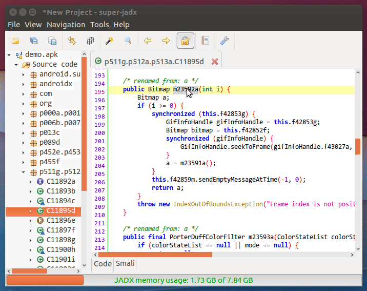

super-jadx v1.0 发布（jadx增强版/逆向专版），支持类、方法、字段、变量重命名
几天前jadx作者放出了最新的1.2.0版本，首度支持了类、方法、字段的重命名特性。但仍有一些不足和缺陷，所以放出本人对jadx增强后的版本。
一、最新的jadx 1.2.0有哪些不足？
今天我简单试用了最新的jadx，发现有以下不足：
- 不支持对方法内的变量进行重命名。
- 不支持自动对父、子类中override的其他方法进行重命名。（如果仅重命名1个方法，会导致代码逻辑上的错误。）
- 对部分override方法重命名时存在bug,会没有反映。
以上两点也刚好是我投入很多时间去解决的问题。相信后续jadx作者会逐步完善这些特性和体验。
二、什么是super-jadx
super-jadx是本人基于原生jadx进行的一个增强版本，专为android逆向人员使用的版本。主要增加了如下特性：
- 增加对类、方法、字段、变量重命名的支持 (原生jadx不支持)。
- 对override、interface方法进行关联重命名 (原生jadx不支持)。
- 重复名称检查(自动对其他class和interface的override、interface方法进行关联检查)。 (原生jadx不支持)。

三、为什么要做这个super-jadx
jadx的搜索功能是非常好用的，但遗憾是一直不支持UI界面的重命名，本人一直期待作者skylot能够进行支持，在skylot/jadx的issues也有很多人表达了这个诉求，当时skylot多次明确表示不会增加重命名功能，对jadx的定位只是反编译代码。所以我在去年底和今年用零散的时间对jadx进行架构摸索和改造，逐步增加重命名的相关特性，这对我个人工作而言绝对是个刚需。所以我是先于skylot对jadx进行功能增强的。
四、开发过程中，需解决的问题，都非常耗费时间:
- 增加对变量重命名的支持，原生jadx中完全没有对变量命名的支持。
- 重命名后更新全局搜索缓存。
- 分别支持搜索缓存
已建立和未建立两种状态下的关联更新。 - 对override、interface方法进行关联重命名。
- 重复名称检查，需要自动对其他class和interface的override、interface方法进行关联检查。
后续计划增加的功能：
- 代码索引持久化，下次启动无需再建立索引，直接可搜索。
- 插件机制，类似jeb，但是API接口和场景会更贴常用情况。
- 重命名传导，自动对被赋值的其他变量、字段进行重命名。
- 交叉引用图或其他辅助分析功能。
最后感谢skylot的无私奉献，为业界带来了优秀的jadx。